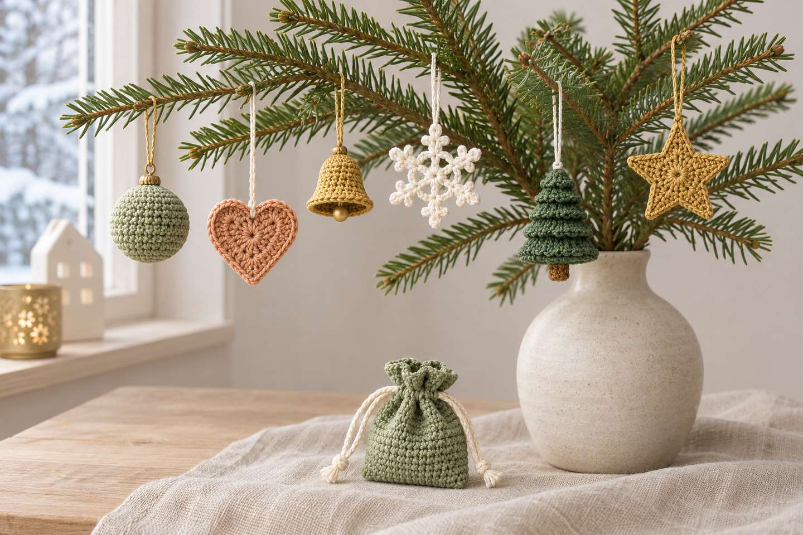
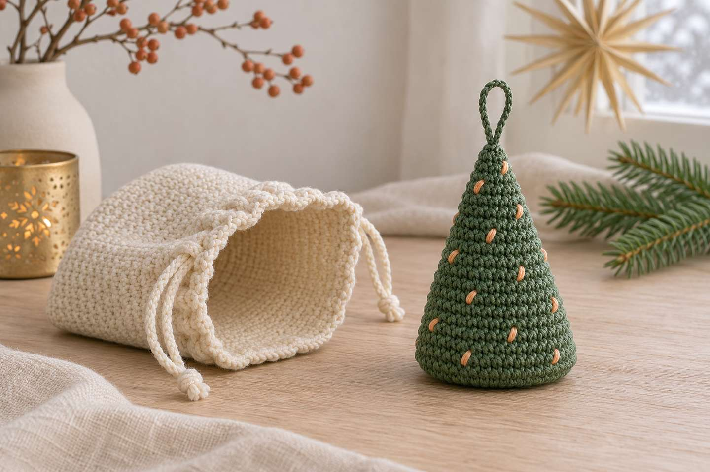
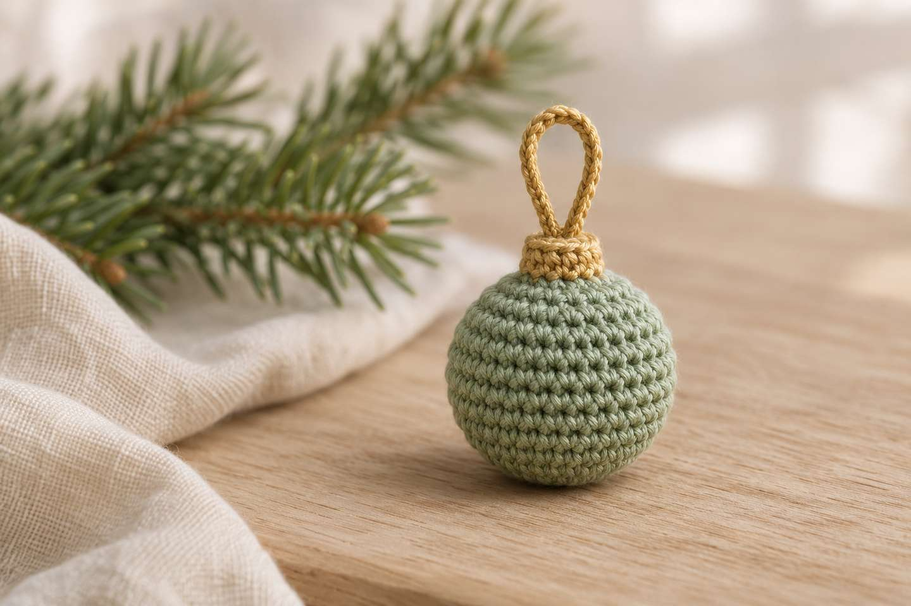
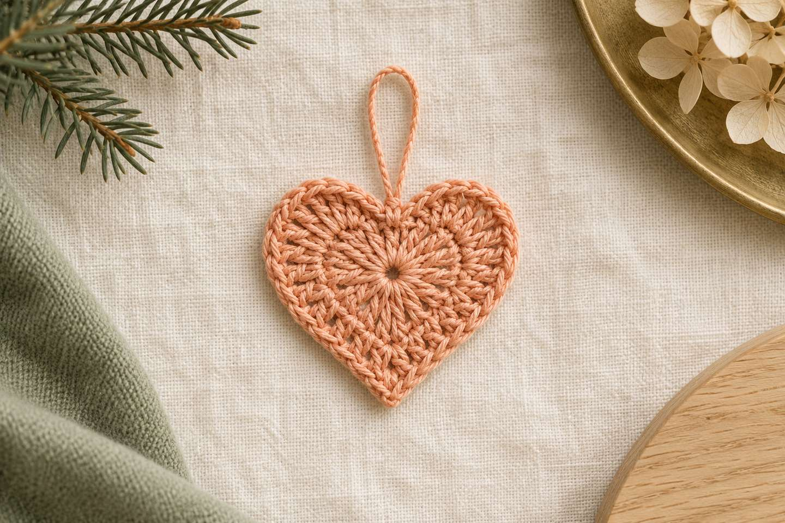
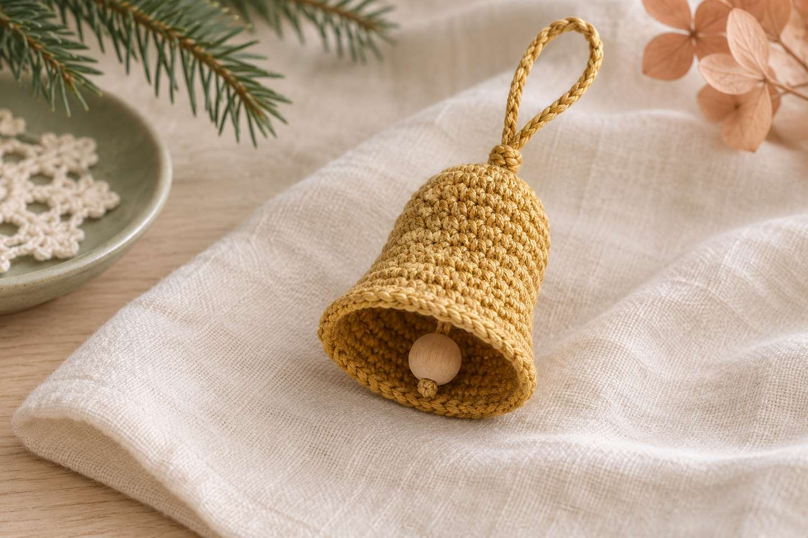
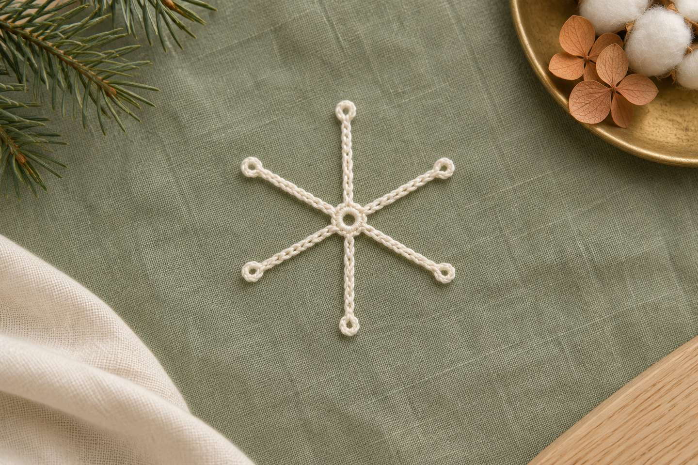
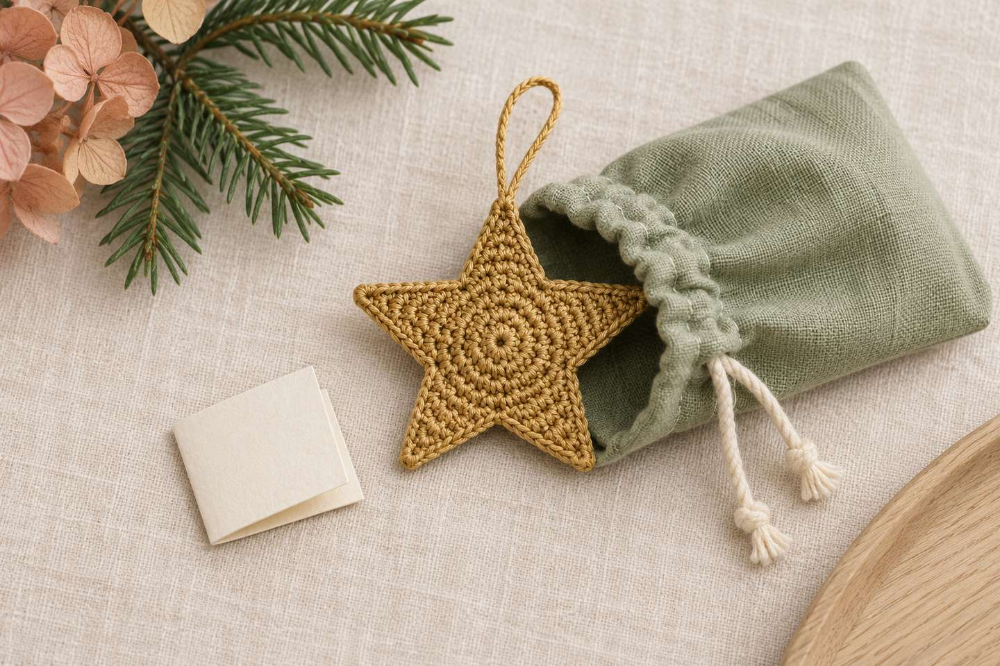

Christbaumschmuck häkeln: 24 Mini-Anhänger für den Adventskalender

Kurz gesagt
Gehäkelter Christbaumschmuck ist eine Adventskalender-Füllung, die bleibt: Jeden Tag kommt ein kleiner Anhänger ins Türchen, und am 24. Dezember ist der Baum geschmückt. Sechs Motive – Kugel, Herz, Glocke, Schneeflocke, Mini-Tannenbaum und Stern – in vier Farben ergeben genau 24 Anhänger. Alle sind höchstens etwa 5–6 cm groß und passen in Kalender-Säckchen; zusammen brauchst du dafür ungefähr 9–11 Stunden (Richtwert).
Schokolade ist am 2. Dezember gegessen – ein gehäkelter Stern hängt noch in zehn Jahren am Baum. Deshalb fülle ich meinen gehäkelten Adventskalender diesmal mit Christbaumschmuck: jeden Tag ein Anhänger, und an Heiligabend ist der Baum (oder ein Zweig in der Vase) fertig geschmückt. Hier bekommst du fünf kostenlose Mini-Anleitungen, einen Plan für alle 24 Türchen und Tipps, wie du alles gut verpackst.
Warum Christbaumschmuck in den Adventskalender?

- Der Baum wächst mit: Jedes Türchen bringt einen Anhänger, und am 24. hängt der ganze Satz am Baum.
- Er bleibt: Gehäkelte Anhänger überstehen viele Jahre – und fallen nicht in Scherben.
- Er passt hinein: Alle Motive sind höchstens etwa 5–6 cm groß. In ein Kalender-Säckchen mit ca. 5 cm Durchmesser und 6–7 cm Höhe (Richtwerte aus der Säckchen-Anleitung) passen sie aufrecht oder leicht gebogen.
- Er braucht nur Reste: Für jeden Anhänger reichen Garnreste – gut für alle, die nachhaltig häkeln möchten.
Woher kommt die Christbaumkugel?
Ab Mitte des 19. Jahrhunderts schmückten viele Familien ihren Christbaum mit kandierten Äpfeln und Nüssen. Im thüringischen Lauscha waren Obst und Zucker für viele zu teuer, Quarzsand für Glas dagegen günstig. Der Legende nach hatte ein armer Glasbläser aus Lauscha 1847 die Idee, gläserne Kugeln für den Christbaum zu blasen; belegt ist ein Auftragsbuch-Eintrag von 1848 über 72 „Weihnachtskugeln“ in verschiedenen Größen. Zwischen 1879 und 1939 entstanden in der Region rund 5.000 verschiedene Formen für Christbaumschmuck (Quellen unten). Die gehäkelte Mini-Kugel ist eine kleine, unzerbrechliche Verbeugung vor dieser Tradition.
Welche 6 Anhänger passen in ein Kalender-Säckchen?
| Anhänger | Größe (Richtwert) | Zeit (Richtwert) | Niveau |
|---|---|---|---|
| Mini-Christbaumkugel | ca. 3 cm Durchmesser | 25–30 Min. | Anfängerin |
| Mini-Herz | ca. 3 cm | 5–10 Min. | Anfängerin mit etwas Übung |
| Mini-Glocke | ca. 3–4 cm hoch | 20–30 Min. | Anfängerin |
| Mini-Schneeflocke | ca. 4–5 cm | 10–15 Min. | Anfängerin |
| Mini-Tannenbaum (Anleitung im Weihnachtsbeitrag) | ca. 5–6 cm hoch | ca. 1 Stunde | Anfängerin |
| Mini-Stern | ca. 4–5 cm | 15–20 Min. | Anfängerin mit etwas Übung |
24-Tage-Plan: 6 Motive in 4 Farben
Sechs Motive in vier Farben ergeben genau 24 Anhänger. Die Farbe wechselt alle sechs Tage, und jede Sechserreihe endet mit einem Stern – am 24. mit dem goldenen.
| Motiv | Creme | Salbei | Apricot | Altgold |
|---|---|---|---|---|
| Kugel | 1 | 7 | 13 | 19 |
| Herz | 2 | 8 | 14 | 20 |
| Glocke | 3 | 9 | 15 | 21 |
| Schneeflocke | 4 | 10 | 16 | 22 |
| Tannenbaum | 5 | 11 | 17 | 23 |
| Stern | 6 | 12 | 18 | 24 |
- Creme
- Salbei
- Apricot
- Altgold
- Tannengrün
Tipp: Häkle die Tannenbäumchen immer in Tannengrün und sticke die „Lichter“ in der Farbe der jeweiligen Reihe auf. Und so viel Zeit brauchst du: ein Satz aus sechs Motiven dauert etwa 2¼ bis 2¾ Stunden, alle 24 Anhänger also rund 9–11 Stunden (Richtwert). Ab Anfang November reicht knapp eine halbe Stunde pro Abend. Häkelst du die Säckchen auch noch, plane dafür zusätzlich 30–45 Minuten pro Säckchen ein. Den Überblick behältst du mit dem Maschenzähler.
Anleitungen: 5 Mini-Anhänger mit Maschenzahlen
- Größe
- ca. 3–5 cm je Anhänger (Richtwert, siehe Tabelle oben)
- Zeit
- 5–30 Minuten je Anhänger (Richtwert)
- Niveau
- Anfängerin (Magic Ring, feste Maschen, Zu- und Abnahmen); Herz und Stern zusätzlich halbe Stäbchen und Stäbchen
- Garn
- Baumwollgarn, Sport/DK, Reste in Creme, Salbei, Apricot, Altgold und Tannengrün
- Zubehör
- Häkelnadel 2,5–3 mm, Maschenmarkierer, Vernähnadel, etwas Füllwatte (Kugel), kleine Holzperle (Glocke), optional Wäschestärke (Schneeflocke)
Abkürzungen
MR = Magic Ring · fM = feste Masche · hStb = halbes Stäbchen · Stb = Stäbchen · Lm = Luftmasche · Km = Kettmasche · Zun = Zunahme (2 fM in eine Masche) · Abn = Abnahme (2 fM zusammen abmaschen). Alle Abkürzungen und Häkelschrift-Zeichen findest du in der Abkürzungs-Übersicht, den Magic Ring in den Häkel-Basics. Kugel und Glocke häkelst du in Spiralrunden – setze einen Maschenmarkierer in die erste Masche jeder Runde.
1. Mini-Christbaumkugel (ca. 3 cm Durchmesser)

- Runde 1: 6 fM in den MR (6)
- Runde 2: 6× Zun (12)
- Runde 3: 6× (1 fM, Zun) (18)
- Runde 4–6: in jede Masche 1 fM (18)
- Runde 7: 6× (1 fM, Abn) – jetzt fest füllen (12)
- Runde 8: 6× Abn (6)
Faden abschneiden, durch die letzten 6 Maschen ziehen, festziehen und vernähen. Den Aufhänger häkelst du oben am Magic Ring an – in Altgold sieht er aus wie die Kappe einer Glaskugel.
2. Mini-Herz (ca. 3 cm)

- In den MR: 3 Lm (zählen als 1. Stb), 3 Stb, 3 hStb, 1 Lm, 1 Stb (das wird die Spitze), 1 Lm, 3 hStb, 3 Stb, 3 Lm, 1 Km in den MR (1 Runde)
Den Magic Ring fest zuziehen – dabei entsteht oben die Einbuchtung des Herzens. Den Aufhänger häkelst du genau dort an.
3. Mini-Glocke (ca. 3–4 cm hoch)

- Runde 1: 6 fM in den MR (6)
- Runde 2: 3× (1 fM, Zun) (9)
- Runde 3: in jede Masche 1 fM (9)
- Runde 4: 3× (2 fM, Zun) (12)
- Runde 5: in jede Masche 1 fM (12)
- Runde 6: 6× (1 fM, Zun) (18)
- Runde 7: 6× (2 fM, Zun) (24)
- Runde 8: in jede Masche 1 Km (24)
Faden vernähen. Für den Klöppel eine kleine Holzperle (ca. 8–10 mm) an einen Faden knoten und innen an der Spitze annähen, sodass sie knapp über dem Rand hängt. Der Aufhänger kommt oben an den Magic Ring.
4. Mini-Schneeflocke (ca. 4–5 cm)

- Runde 1: 6 fM in den MR, mit 1 Km in die 1. fM schließen (6)
- Runde 2: 6× (6 Lm, 1 Km in die 3. Lm ab der Nadel, 3 Lm, 1 Km in die nächste fM) (6 Arme)
Die letzte Km sitzt wieder in der 1. fM. Faden vernähen und die Flocke flach ziehen; wer sie fester mag, spannt sie mit Wäschestärke in Form und lässt sie trocknen. Der Aufhänger kommt an eine der kleinen Spitzen.
5. Mini-Stern (ca. 4–5 cm)
- Runde 1: 5 fM in den MR (5)
- Runde 2: 5× Zun, mit 1 Km in die 1. Masche schließen (10)
- Runde 3: 5× (1 Km in die nächste Masche, 4 Lm, ab der 2. Lm von der Nadel: 1 fM, 1 hStb, 1 Stb; 1 Masche überspringen) (5 Zacken)
Mit 1 Km in die erste Km der Runde schließen und den Faden vernähen. Der Aufhänger kommt an eine Zacke.
6. Mini-Tannenbaum (ca. 5–6 cm hoch)
Die Anleitung mit allen 14 Runden steht im Beitrag Weihnachten häkeln 2026.
Aufhänger für alle Anhänger
Neuen Faden mit 1 Km an der Spitze (Magic Ring bzw. Zacke) anschlingen, 10–12 Lm häkeln, mit 1 Km in dieselbe Stelle schließen und vernähen.
Wie verpacke ich die Anhänger im Adventskalender?

- Flach einlegen: Stern, Herz und Schneeflocke dürfen im Säckchen leicht gebogen liegen; Kugel, Glocke und Tannenbaum kommen aufrecht hinein.
- Mit Zettel: Ein kleiner Zettel mit „Tag 7 von 24“ oder einem Wunsch macht aus dem Anhänger ein Geschenk.
- Mit Zweig: Wer keinen großen Baum hat, stellt ein paar Zweige in eine Vase und hängt die Anhänger Tag für Tag dazu.
- Für Kinder: Holzperlen und lange Schlaufen sind für Kleinkinder nicht geeignet – die Glocke dann ohne Perle häkeln und die Anhänger nicht als Spielzeug geben.
Noch mehr für die Adventszeit
Die passenden Säckchen findest du in der Adventskalender-Anleitung, Farbideen und den Mini-Tannenbaum im Beitrag Weihnachten häkeln 2026. Für den Mini-Pilz aus dem Herbst gibt es eine eigene Taschenanhänger-Anleitung – in Rot mit weißen Punkten ist er ein klassischer Fliegenpilz für den Baum. Welche Nadel zu welchem Garn passt, steht in den 6 nützlichen Häkel-Tools.
Und du? Welches Motiv hängst du zuerst an den Baum? Zeig mir deinen Christbaumschmuck auf Instagram oder TikTok! 🎄
Häufige Fragen zu gehäkeltem Christbaumschmuck
Welcher Christbaumschmuck passt in einen Adventskalender?
Kleine Anhänger bis etwa 5–6 cm: Mini-Kugel, Herz, Glocke, Schneeflocke, Stern und Mini-Tannenbaum. Sie passen in Kalender-Säckchen mit ca. 5 cm Durchmesser und 6–7 cm Höhe.
Wie lange brauche ich für 24 gehäkelte Anhänger?
Mit sechs Motiven in vier Farben rund 9–11 Stunden (Richtwert). Ab Anfang November reicht knapp eine halbe Stunde pro Abend, damit bis zum 1. Dezember alles fertig ist.
Welches Garn eignet sich für gehäkelten Christbaumschmuck?
Baumwollgarn in Sport- oder DK-Stärke mit einer Nadel von 2,5–3 mm. Die Maschen bleiben klar sichtbar und die Anhänger formstabil. Für jeden Anhänger reichen Garnreste.
Wie wird eine gehäkelte Schneeflocke steif?
Die Schneeflocke flach in Form spannen, mit Wäschestärke behandeln und trocknen lassen. Ohne Stärke bleibt sie weich, hängt aber trotzdem schön.
Ist gehäkelter Baumschmuck für Kinder geeignet?
Für Kleinkinder sind Holzperlen und lange Schlaufen nicht geeignet. Häkle die Glocke dann ohne Perle und gib die Anhänger nicht als Spielzeug.